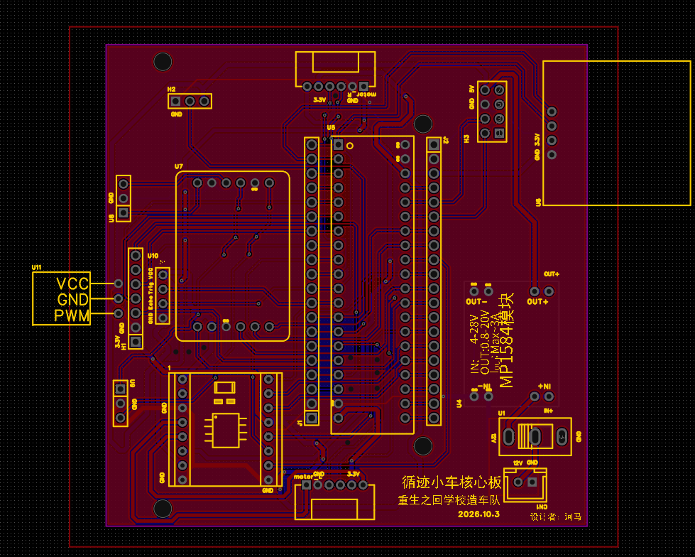
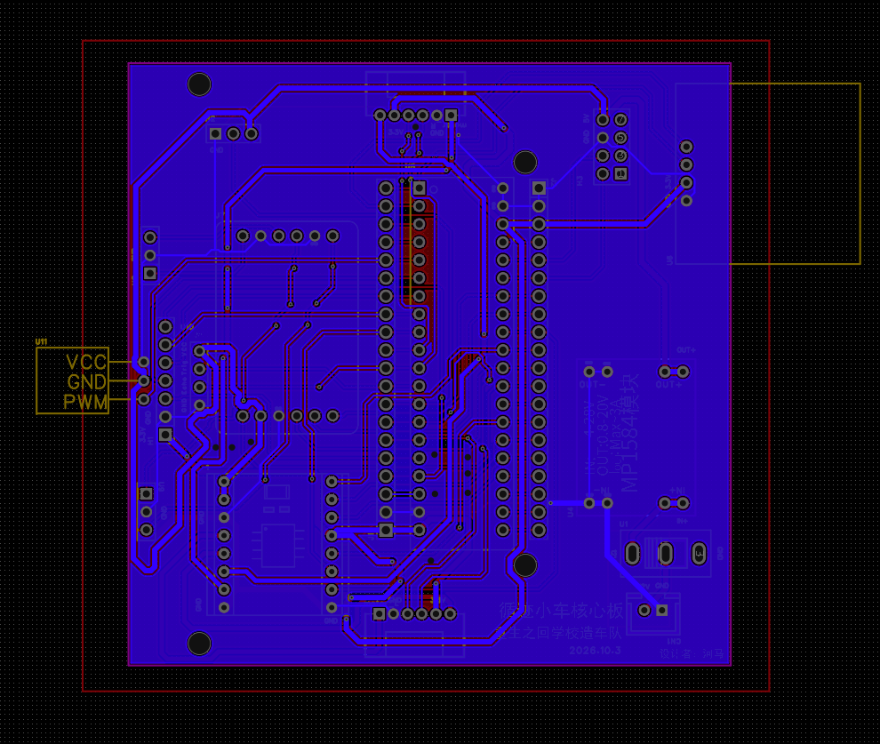
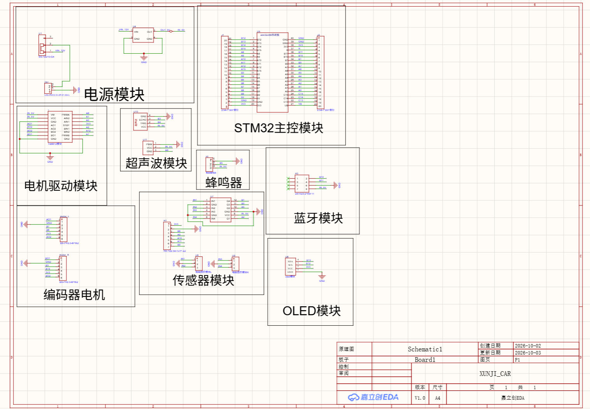

基本信息
队伍名称重生之回学校造车队
PCB名称循迹小车核心板
制板日期2026-10-03
设计定位模块直插式连接/转接核心板
“重生之回学校造车队”自制 PCB 图文说明
制板日期：2026-10-03
将 STM32 主控板、电机驱动模块、编码器电机、传感器、蓝牙、蜂鸣器、显示与电源模块进行集中转接，减少杜邦线数量，便于循迹小车的安装、调试与维护。
本板采用成品模块和排针接口进行连接，核心板本身主要承担电源分配、信号引出和模块转接功能。原理图中包含电源模块、STM32主控模块、电机驱动模块、编码器电机接口、超声波接口、舵机接口、蜂鸣器、蓝牙模块、传感器模块及 OLED 扩展接口。
电源网络按功能区分为电池输入、降压输出 5V、3.3V 逻辑电源和公共 GND；电机与传感器等接口通过排针引出，便于插拔和后续调试。



本 PCB 由队伍根据循迹小车的模块连接需求自行完成接口规划、原理图绘制、PCB布局布线、丝印标识与电源/信号网络设计。板面印有队伍名称、PCB名称、日期及接口标识，可通过现场实物与本说明页中的设计资料进行核对。